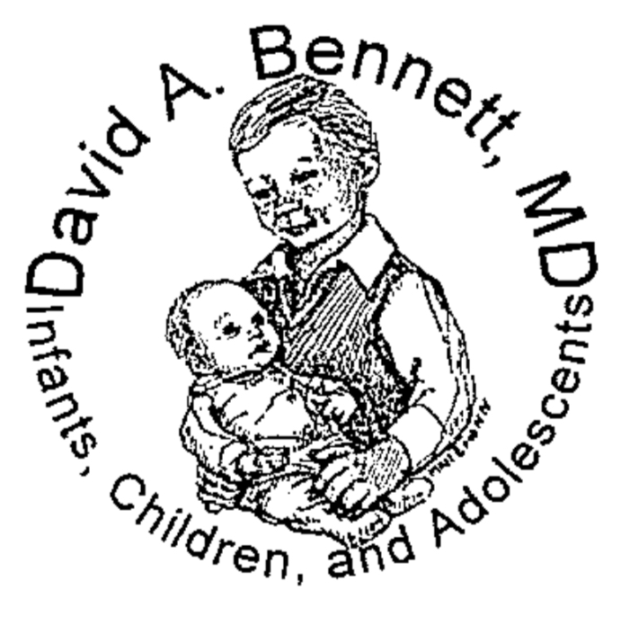

<!DOCTYPE html>
<html lang="en"></html>
  <head>
    <title>Medical Records - Information</title>
    <meta
      name="description"
      content="When a physician retires, one of the most challenging and important duties facing him is caring for the medical records of his patients. This is equally..."
    />
    <meta
      property="og:title"
      content="Information - Spotless Hungry Crocodile"
    />
    <meta
      property="og:description"
      content="When a physician retires, one of the most challenging and important duties facing him is caring for the medical records of his patients. This is equally..."
    />
    <meta name="viewport" content="width=device-width, initial-scale=1.0" />
    <meta charset="utf-8" />
    <meta property="twitter:card" content="summary_large_image" />
    <style data-tag="reset-style-sheet">
      html {
        line-height: 1.15;
      }
      body {
        margin: 0;
      }
      * {
        box-sizing: border-box;
        border-width: 0;
        border-style: solid;
      }
      p,
      li,
      ul,
      pre,
      div,
      h1,
      h2,
      h3,
      h4,
      h5,
      h6,
      figure,
      blockquote,
      figcaption {
        margin: 0;
        padding: 0;
      }
      button {
        background-color: transparent;
      }
      button,
      input,
      optgroup,
      select,
      textarea {
        font-family: inherit;
        font-size: 100%;
        line-height: 1.15;
        margin: 0;
      }
      button,
      select {
        text-transform: none;
      }
      button,
      [type="button"],
      [type="reset"],
      [type="submit"]
      button::-moz-focus-inner,
      [type="button"]::-moz-focus-inner,
      [type="reset"]::-moz-focus-inner,
      [type="submit"]::-moz-focus-inner {
        border-style: none;
        padding: 0;
      }
      button:-moz-focus,
      [type="button"]:-moz-focus,
      [type="reset"]:-moz-focus,
      [type="submit"]:-moz-focus {
        outline: 1px dotted ButtonText;
      }
      a {
        color: inherit;
        text-decoration: inherit;
      }
      input {
        padding: 2px 4px;
      }
      img {
        display: block;
      }
      html {
        scroll-behavior: smooth;
      }
    </style>
    <style data-tag="default-style-sheet">
      html {
        font-family: Noto Sans;
        font-size: 16px;
      }

      body {
        font-weight: 400;
        font-style: normal;
        text-decoration: none;
        text-transform: none;
        letter-spacing: normal;
        line-height: 1.15;
        color: var(--dl-color-theme-neutral-dark);
        background-color: var(--dl-color-theme-neutral-light);

        fill: var(--dl-color-theme-neutral-dark);
      }
    </style>
    <link
      rel="stylesheet"
      href="https://unpkg.com/animate.css@4.1.1/animate.css"
    />
    <link
      rel="shortcut icon"
      href="public/logo.jpg"
      type="icon/png"
      sizes="32x32"
    />
    <link
      rel="stylesheet"
      href="https://fonts.googleapis.com/css2?family=Urbanist:ital,wght@0,100;0,200;0,300;0,400;0,500;0,600;0,700;0,800;0,900;1,100;1,200;1,300;1,400;1,500;1,600;1,700;1,800;1,900&amp;display=swap"
      data-tag="font"
    />
    <link
      rel="stylesheet"
      href="https://fonts.googleapis.com/css2?family=Urbanist"
      data-tag="font"
    />
    <link
      rel="stylesheet"
      href="https://fonts.googleapis.com/css2?family=Inter:wght@100;200;300;400;500;600;700;800;900&amp;display=swap"
      data-tag="font"
    />
    <link
      rel="stylesheet"
      href="https://fonts.googleapis.com/css2?family=STIX+Two+Text:ital,wght@0,400;0,500;0,600;0,700;1,400;1,500;1,600;1,700&amp;display=swap"
      data-tag="font"
    />
    <link
      rel="stylesheet"
      href="https://fonts.googleapis.com/css2?family=Urbanist:ital,wght@0,100;0,200;0,300;0,400;0,500;0,600;0,700;0,800;0,900;1,100;1,200;1,300;1,400;1,500;1,600;1,700;1,800;1,900&amp;display=swap"
      data-tag="font"
    />
    <link
      rel="stylesheet"
      href="https://fonts.googleapis.com/css2?family=Urbanist:ital,wght@0,100;0,200;0,300;0,400;0,500;0,600;0,700;0,800;0,900;1,100;1,200;1,300;1,400;1,500;1,600;1,700;1,800;1,900&amp;display=swap"
      data-tag="font"
    />
    <link
      rel="stylesheet"
      href="https://fonts.googleapis.com/css2?family=Urbanist:ital,wght@0,100;0,200;0,300;0,400;0,500;0,600;0,700;0,800;0,900;1,100;1,200;1,300;1,400;1,500;1,600;1,700;1,800;1,900&amp;display=swap"
      data-tag="font"
    />
    <link
      rel="stylesheet"
      href="https://fonts.googleapis.com/css2?family=Noto+Sans:ital,wght@0,100;0,200;0,300;0,400;0,500;0,600;0,700;0,800;0,900;1,100;1,200;1,300;1,400;1,500;1,600;1,700;1,800;1,900&amp;display=swap"
      data-tag="font"
    />
    <link
      rel="stylesheet"
      href="https://fonts.googleapis.com/css2?family=Urbanist:ital,wght@0,100;0,200;0,300;0,400;0,500;0,600;0,700;0,800;0,900;1,100;1,200;1,300;1,400;1,500;1,600;1,700;1,800;1,900&amp;display=swap"
      data-tag="font"
    />
    <link
      rel="stylesheet"
      href="https://fonts.googleapis.com/css2?family=Urbanist:ital,wght@0,100;0,200;0,300;0,400;0,500;0,600;0,700;0,800;0,900;1,100;1,200;1,300;1,400;1,500;1,600;1,700;1,800;1,900&amp;display=swap"
      data-tag="font"
    />
    <link
      rel="stylesheet"
      href="https://fonts.googleapis.com/css2?family=Noto+Sans:ital,wght@0,100;0,200;0,300;0,400;0,500;0,600;0,700;0,800;0,900;1,100;1,200;1,300;1,400;1,500;1,600;1,700;1,800;1,900&amp;display=swap"
      data-tag="font"
    />
    <link
      rel="stylesheet"
      href="https://fonts.googleapis.com/css2?family=Urbanist:ital,wght@0,100;0,200;0,300;0,400;0,500;0,600;0,700;0,800;0,900;1,100;1,200;1,300;1,400;1,500;1,600;1,700;1,800;1,900&amp;display=swap"
      data-tag="font"
    />
    <link
      rel="stylesheet"
      href="https://unpkg.com/@teleporthq/teleport-custom-scripts/dist/style.css"
    />
    <style>
      @keyframes fade-in-left {
        0% {
          opacity: 0;
          transform: translateX(-20px);
        }
        100% {
          opacity: 1;
          transform: translateX(0);
        }
      }
    </style>
  </head>
  <body>
    <link rel="stylesheet" href="./style.css" />
    <div>
      <link href="./information.css" rel="stylesheet" />
      <div class="information-container">
        <div class="header-header header-root-class-name1">
          <header
            data-thq="thq-navbar"
            class="navbarContainer header-navbar-interactive"
          >
            
            <div data-thq="thq-navbar-nav" class="header-desktop-menu">
              <nav class="header-links">
                <span class="bodySmall"><span>Home</span></span
                ><span class="header-nav22 bodySmall"><span>Contact</span></span
                ><span class="header-nav32 bodySmall"
                  ><span>Request Medical Records</span></span
                ><span class="header-nav42"
                  ><span>Last Greetings...</span></span
                >
              </nav>
            </div>
            <div data-thq="thq-burger-menu" class="header-burger-menu">
              <svg viewBox="0 0 1024 1024" class="header-icon socialIcons">
                <path
                  d="M128 554.667h768c23.552 0 42.667-19.115 42.667-42.667s-19.115-42.667-42.667-42.667h-768c-23.552 0-42.667 19.115-42.667 42.667s19.115 42.667 42.667 42.667zM128 298.667h768c23.552 0 42.667-19.115 42.667-42.667s-19.115-42.667-42.667-42.667h-768c-23.552 0-42.667 19.115-42.667 42.667s19.115 42.667 42.667 42.667zM128 810.667h768c23.552 0 42.667-19.115 42.667-42.667s-19.115-42.667-42.667-42.667h-768c-23.552 0-42.667 19.115-42.667 42.667s19.115 42.667 42.667 42.667z"
                ></path>
              </svg>
            </div>
            <div
              data-thq="thq-mobile-menu"
              class="header-mobile-menu1 mobileMenu"
            >
              <div class="header-nav">
                <div class="header-top">
                  
                  <div data-thq="thq-close-menu" class="header-close-menu">
                    <svg
                      viewBox="0 0 1024 1024"
                      class="header-icon2 socialIcons"
                    >
                      <path
                        d="M810 274l-238 238 238 238-60 60-238-238-238 238-60-60 238-238-238-238 60-60 238 238 238-238z"
                      ></path>
                    </svg>
                  </div>
                </div>
                <nav class="header-links1">
                  <a href="index.html" class="header-nav121 bodySmall"
                    ><span>Home</span></a
                  ><a href="contact.html" class="header-nav221 bodySmall"
                    ><span>Contact</span></a
                  ><a href="chart-form.html" class="header-nav321 bodySmall"
                    ><span>Request Medical Records</span></a
                  ><a href="information.html" class="header-nav421"
                    ><span class="bodySmall header-text">Information</span
                    ><br /><br
                  /></a>
                </nav>
              </div>
            </div>
          </header>
        </div>
        <div class="information-banner2">
          <div class="max-width-max-width thq-section-max-width">
            <div class="max-width-container">
              <h2 class="max-width-title thq-heading-2">
                <span>Greetings, once again, to all my patients!</span>
              </h2>
              <h3 class="max-width-text thq-heading-3">
                <span
                  >When I penned my January, 2024 letter to you, I included the
                  following words near the end: “2024 will be a season of change
                  here.“ These words were more insightful than I could have
                  known at that time. I deeply desired and had truly expected
                  that after 25 years of practice here at Riverside, I had
                  arranged for ongoing continuity of pediatric care at this same
                  office—for the convenience of our entire community. However,
                  for various reasons, the transition plans I had explained for
                  all of you in that letter will not happen.</span
                >
              </h3>
            </div>
          </div>
        </div>
        <div class="information-features3">
          <div class="features16-layout300 thq-section-padding">
            <div class="features16-max-width thq-section-max-width">
              <div class="features16-section-title">
                <span class="features16-text thq-body-small"
                  ><span>Ensuring Continuity of Care</span></span
                >
                <div class="features16-content">
                  <h2 class="features16-text1 thq-heading-2">
                    <span>Retirement Announcement</span>
                  </h2>
                  <span class="features16-text2 thq-body-large"
                    ><span
                      >As I wrote in my January letter, my retirement is really
                      happening. The end of June 2024 will mark the end of an
                      era—40 years of private pediatric practice for me
                      following four years of medical school and three years of
                      pediatric residency training. It has all been good, and I
                      have loved every day. Each of you has been a part of it—a
                      very special part. Thank you for being such a blessing to
                      me throughout these years.</span
                    ></span
                  >
                </div>
              </div>
              <div class="features16-content1">
                <div class="features16-row thq-flex-row">
                  <div class="features16-feature1">
                    
                    <div class="features16-content2">
                      <h3 class="features16-feature1-title thq-heading-3">
                        <span>Transfer of Care</span>
                      </h3>
                      <span class="thq-body-small"
                        ><span
                          >In Spokane, unfortunately, as well as throughout our
                          country, the need for physicians of all specialties
                          (especially in primary care areas such as Pediatrics)
                          is much greater than the supply is. We are
                          experiencing a doctor shortage, and patients often
                          find it quite difficult to find new doctors. I do not
                          want to depart with that burden on my shoulders—and in
                          your lives. To that end, I have conferred with some of
                          the pediatric providers in the North Spokane area, and
                          have agreed with the MultiCare/Rockwood North Spokane
                          clinic to accept any of my patients who desire to use
                          their services. (You are certainly welcome to seek
                          your care elsewhere as well.) Most of my patients are
                          in the birth to 16 year old age range, and Dr. Lance
                          von Bracht has sufficient room in his practice for all
                          of you. Those patients 17 years and older are being
                          welcomed into the Family Practice area of the same
                          clinic. I have met with Dr. von Bracht, and see him as
                          a much younger version of me! His family is
                          delightful, and I believe his care for you will be
                          excellent. We have similar styles in many ways, and I
                          think you will be pleased with his care.</span
                        ></span
                      >
                    </div>
                  </div>
                  <div class="features16-feature2">
                    
                    <div class="features16-content3">
                      <h3 class="thq-heading-3"><span>Future Clinics</span></h3>
                      <span class="thq-body-small"
                        ><span
                          >For my patients from birth to 16 years of age, who
                          want to establish care with Dr. Lance von Bracht,
                          please call his office at the MultiCare Rockwood
                          Pediatric North Spokane clinic at (509)-342-3010, and
                          identify yourself or your child as a patient of
                          retiring Dr. Bennett. They have assured me that they
                          will assist you and expedite getting you into their
                          clinic. For my patients 17 years of age and older who
                          would like to establish care with MultiCare Rockwood
                          Family Practice clinic in North Spokane, please call
                          (509)-342-3010 and identify yourself or your child as
                          a patient of retiring Dr. Bennett. They have also
                          assured me that they will assist you and expedite
                          getting you into that clinic.</span
                        ></span
                      >
                    </div>
                  </div>
                  <div class="features16-feature3">
                    
                    <div class="features16-content4">
                      <h3 class="thq-heading-3">
                        <span>Management of Medical Records</span>
                      </h3>
                      <span class="thq-body-small"
                        ><span
                          >When a physician retires, one of the most challenging
                          and important duties facing him is caring for the
                          medical records of his patients. This is equally
                          important whether electronic or paper records have
                          been kept over the years. In my case, all of your
                          charts are physical, paper chart records. There are
                          four roles that a records retention service provides
                          for these records.</span
                        ></span
                      >
                      <div class="feature3-description2-container">
                        <span class="thq-body-small"
                          ><span
                            >1. Physically taking control of the roughly 6,000
                            patient charts that I have from the past 25 years of
                            pediatric care in Riverside, and then moving them to
                            a secure storage facility.</span
                          ></span
                        >
                      </div>
                      <div class="feature3-description21-container">
                        <span class="thq-body-small"
                          ><span
                            >2. Promising to care for these charts for the next
                            20 years.</span
                          ></span
                        >
                      </div>
                      <div class="feature3-description22-container">
                        <span class="thq-body-small"
                          ><span
                            >3. Making a copy of the pertinent chart notes which
                            I have recorded when requested to do so by the
                            patient or parent, while protecting such information
                            from falling into unauthorized hands.</span
                          ></span
                        >
                      </div>
                      <div class="feature3-description23-container">
                        <span class="thq-body-small"
                          ><span
                            >4. Finally, when state law no longer requires a
                            chart to be kept (which is approximately 20 years),
                            the medical records retention service will
                            confidentially destroy those medical records.</span
                          ></span
                        >
                      </div>
                    </div>
                  </div>
                </div>
              </div>
            </div>
          </div>
        </div>
        <div class="information-follow-up-info">
          <div class="banner1-container thq-section-padding">
            <div class="banner1-max-width thq-section-max-width">
              <div class="banner1-container1">
                <h2 class="banner1-title thq-heading-2">
                  <span>Legacy Information Management</span>
                </h2>
                <h3 class="banner1-text thq-heading-3">
                  <span
                    >I have selected Legacy Information Management, LLC, to
                    provide these services for my patient charts. If you are 18
                    years of age or older and need a copy of your chart, or if
                    you need a copy of a chart of your minor children, you will
                    need to provide sufficient identification to assure Legacy
                    Information Management that you are legally authorized to
                    receive this information. (Just as we have always been
                    careful in the office to check and double check this
                    information, they will need to do the same.)</span
                  >
                </h3>
              </div>
            </div>
          </div>
        </div>
        <div class="information-cta7">
          <div class="cta15-container thq-section-padding">
            
            <div class="cta15-max-width thq-section-max-width">
              <div class="cta15-column">
                <div class="cta15-content">
                  <h2 class="thq-heading-2">
                    <span>Request Medical Records</span>
                  </h2>
                  <p class="thq-body-large">
                    <span
                      >If you want to request your medical records from David A. Bennett's practice, please click the button below
                      to start the process.</span
                    >
                  </p>
                </div>
                <div class="cta15-actions">
                  <a
                    href="chart-form.html"
                    class="cta15-navlink thq-button-filled"
                    ><span>Request Medical Records</span></a
                  >
                </div>
              </div>
            </div>
          </div>
        </div>
        <footer class="footerContainer information-footer">
          <div class="information-container1">
            <div class="app-component-container">
              
            </div>
            <nav class="information-nav">
              <a href="index.html" class="information-nav12 bodySmall">Home</a
              ><a href="contact.html" class="information-nav22 bodySmall"
                >Contact</a
              ><span class="information-nav32 bodySmall"
                >Request Medical Records</span
              ><a href="information.html" class="information-nav42"
                ><span class="bodySmall">Information</span><br
              /></a>
            </nav>
          </div>
          <div class="information-separator"></div>
          <div class="information-container2">
            <span class="bodySmall information-text2"
              >© 2024 DavidBennettMedicalCare, All Rights Reserved.</span
            >
          </div>
        </footer>
      </div>
    </div>
    <script
      data-section-id="navbar"
      src="https://unpkg.com/@teleporthq/teleport-custom-scripts"
    ></script>
  </body>
</html>
